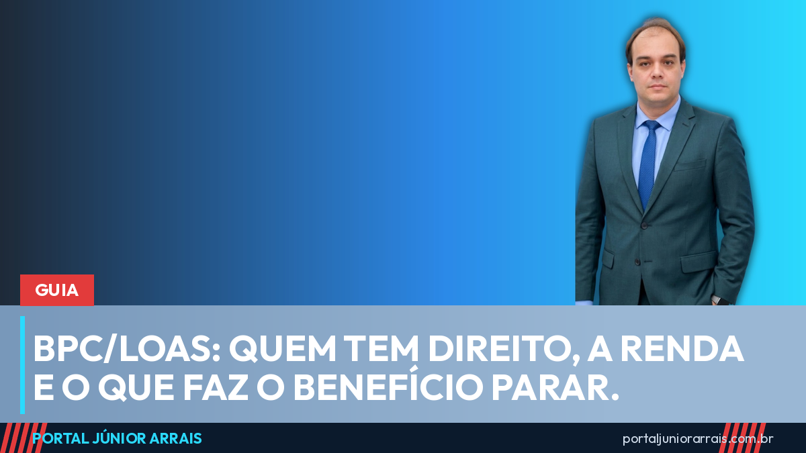
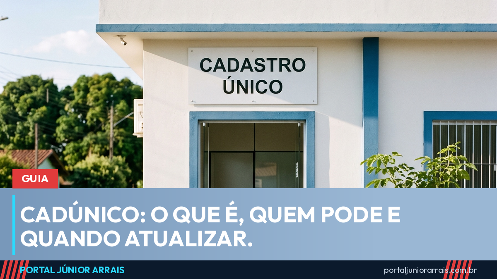

Consultas rápidas dos benefícios Datas de pagamento, cadastro, calculadora e alerta de golpe
Bolsa FamíliaData pelo final do NIS e cidades antecipadas
INSSAposentados e pensionistas, até ou acima do mínimo
BPC/LOASData pelo final do cartão, renda e revisão
Gás do PovoQuando sai o seu próximo vale
Pé-de-MeiaDia da parcela pelo mês de aniversário
CadÚnicoCalcule a renda por pessoa e veja se o cadastro vence
CalculadoraQuanto a sua família recebe no Bolsa Família
GolpesComo reconhecer antes de cair

Consórcio: quem desiste recebe de volta por sorteio ou no fim do grupo; veja os descontos

Rescisão indireta: falta grave da empresa dá direito a sair com multa de 40% do FGTS
Como pagar o INSS sem perder o Bolsa Família em 2026: veja o passo a passo
Inscreva-se no canal →
Adoção no Brasil: passo a passo, quem pode adotar e licença de 120 dias
Recall de carro e de produtos: reparo sem custo, consulta pelo chassi e licenciamento
Home office: quem paga as despesas, controle de jornada e volta ao presencial
 Vizinho barulhento: o que diz a lei, multa no condomínio e como resolver
Cheque especial: juros limitados a 8% ao mês e como sair da dívida mais cara
Vizinho barulhento: o que diz a lei, multa no condomínio e como resolver
Cheque especial: juros limitados a 8% ao mês e como sair da dívida mais cara
 Auxílio-reclusão: quem tem direito, carência de 24 meses, limite de renda e valor
Auxílio-reclusão: quem tem direito, carência de 24 meses, limite de renda e valor
Vizinho barulhento: o que diz a lei, multa no condomínio e como resolver
Cheque especial: juros limitados a 8% ao mês e como sair da dívida mais cara
Auxílio-reclusão: quem tem direito, carência de 24 meses, limite de renda e valor
YouTube Shorts
Ver todos → Bolsa Família em novembro acaba no dia 18/11! Veja as datas
Bolsa Família em novembro acaba no dia 18/11! Veja as datas
 Bolsa Família: começou o pagamento em novembro! Veja a lista de cidades com pagamento antecipado
Bolsa Família: começou o pagamento em novembro! Veja a lista de cidades com pagamento antecipado
 INSS já cortou 277 mil auxílios em 2026! Veja o que fazer se você for chamado para a revisão
INSS já cortou 277 mil auxílios em 2026! Veja o que fazer se você for chamado para a revisão
 Golpe do Bolsa Família: agora a polícia federal entrou no caso
Golpe do Bolsa Família: agora a polícia federal entrou no caso
 Bolsa Família: valor diminuiu por causa de falta na escola? Veja o verdadeiro motivo
Bolsa Família: valor diminuiu por causa de falta na escola? Veja o verdadeiro motivo
Guias do portal
Ver todos os guias →
Bolsa Família
Bolsa Família: quem tem direito, quanto recebe, regra de proteção e o que bloqueia o benefício

BPC/LOAS
BPC/LOAS: quem tem direito, o limite de renda, a avaliação do INSS e o que faz o benefício parar

Benefícios
CadÚnico: o que é, quem pode se inscrever, quando atualizar e quais benefícios dependem dele
Pé-de-Meia
Pé-de-Meia: quem tem direito, quanto o estudante recebe, o que trava a conta e o calendário
Últimas notícias
Saúde
Laqueadura e vasectomia no SUS: 21 anos ou 2 filhos e sem aval do cônjuge
Direitos
Seguro de celular e proteção estendida: o que a lei já cobre, venda casada e como cancelar

Trabalho
Jovem aprendiz: idade, contrato de até 2 anos, jornada, salário e FGTS de 2%
Justiça
Curatela: quando a família precisa pedir e como fica o benefício do INSS

Economia
Golpe do boleto falso: como conferir antes de pagar e quem responde pelo prejuízo

Trabalho